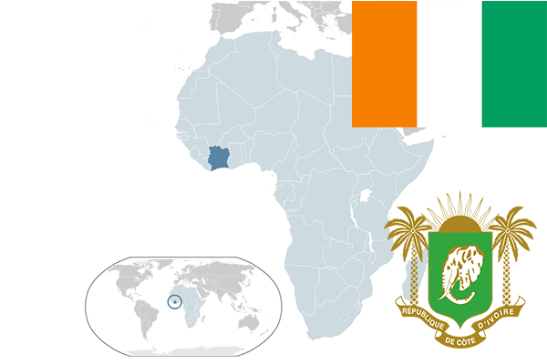

To`liq nomi: Kot-d’Ivuar Respublikasi
Region: G`arbiy Afrika
Qonunchilik shakli: Respublika
Mustaqillik kuni : 7-avgust 1960-yil (Fransiyadan)
Poytaxt: Yamusukro
Maydoni: 322 460 km² (dunyoda 67 -o`rinda )
Chegaradosh davlatlari:Liberiya, Gvineya, Mali, Burkina-Faso, Gana
Aholisi: 23 740 424 (dunyoda 86 -o`rinda, 2016 -yil roʻyxat)
Aholi zichligi: 73,62 /km²
Aholining o`rtacha yoshi: 49,05 yil ( 51,7 ayollar, 46,4 erkaklar)
Rasmiy tili: Fransuz tili
Dini: 50% mahalliy dinlar qolganlari Islom va xristian
Pul birligi: Afrika franki
Telefon prefiksi: +225
Internet domen: .ci
Xalqaro tashkilotlarga a`zoligi: BMT (1960 – yildan)
Dengiz va okeanlarga chiqishi: Atlantika okeani
YIM: Butun: $ 34,028 mlrd, Jon boshiga: $ 1800 (2009 - yil roʻyxati)
Yirik shaharlari: Abidjan